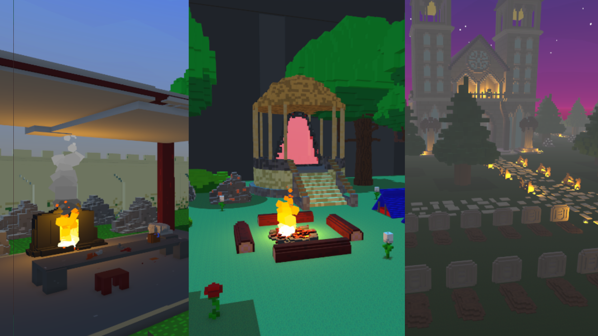

Blocktopia
Synopsis
Farm yard frenzy was a game made in one week by me and a friend for the brackeys game jam 2024.2. It is a tower defence game themed around a farm where the goal is to protect your prized golden chicken. Place defenses and make upgrades to survive harder and harder waves as more of the wildlfie attacks your barn.
Key Contributions
Some of the key contributions i made and would like to highlight
- Defence placement, i developed the grid placement with different tiles types helping defence placement be organised and defences only allowed in certain areas
- Defence Upgrades, currency can be spent to upgrade different stats for the defences from range to extra damage.
- Menus and ui- All menus and ui was made and developed by me where i tired to create nice intuitive design while keeping up with the art style.
- Online Leaderboard was developed and implemented by me giving players that competitive side try and beat the other players and see how many days they can survive